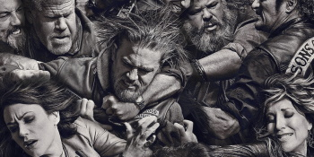

Novosti
Peaky Blinders- Nova sezona
Nova sezona omiljene gangsterske serije Peaky Blindersa stiže u 2021. godini nakon što je odgođena zbog pandemije. Prošla sezona iznenadila gledatelje povratkom Alfiea Solomonsa kojeg glumi Tom Hardy.
Otvori članak
The Irishman- Tehnološko čudo
Film The Irishman koji je na Netflixu izašao prije godinu dana i dalje ima dobru gledanost, jedan od razloga zašto je film cijenjen je dobra tehnologija koju su koristili kako bi pomladili glumce.
Otvori članak
Departed- Savršeni film?
The Departed (Pokojni) je film koji je očarao kritike pričom koja je ispričana kroz likove koje su glumili Matt Damon i Leonardo DiCaprio. Leonardo DiCaprio je u ovom filmu zaslužio Oscara, no nije ga dobio.
Otvori članak
GoodFellas- napisan po istinitom događaju
Film GoodFellas baziran je na istinitoj priči mafijaša Hilla, no film je pomalo uljepšan koristeći Hollywoodsku magiju.
Otvori članak
Kum-Film koji ne stari
Kum je jedan od onih filmova koji nikad neće ostariti zbog sjajnog scenarija i sadržaja koji taj film sadrži. Iskustvo gledanje ovog filma je sjajno i nije ni čudo da je dobio Oscara prije 50 godina kada je izašao.
Otvori članak
Reservoir Dogs- Minimalan budžet
Film koji je ostvaren s jako niskim budžetom je pokazao da nije potrebno mnogo novca da se pokaže kvaliteta.
Otvori članak
Sons of anarchy- Serija s neočekivanim krajem 
Sons of anarchy je jedna od onih serija od kojih ne očekujete puno, ali vas ugodno iznenadi. Serija je puna spletki i neočekivanih preokreta koji se događaju jednoj motociklističkoj bandi.
Otvori članak
Kum 2- nastavak koji nije razočarao
Kum 2 je savršeni nastavak svog prethodnika i samo produbljuje priču mafijaške obitelji Corleone nakon smrti Vita.
Otvori članak
Kum 3- nastavak koji je razočarao
Mnogo očekivani treći nastavak kultne triologije Kum razočarao je mnoge fanove. Film je izašao 20 godina nakon prethodnika i izgubio je svoju čar. No, u 2021. stiže Remastered verzija koju možda nebi bilo loše pogledati